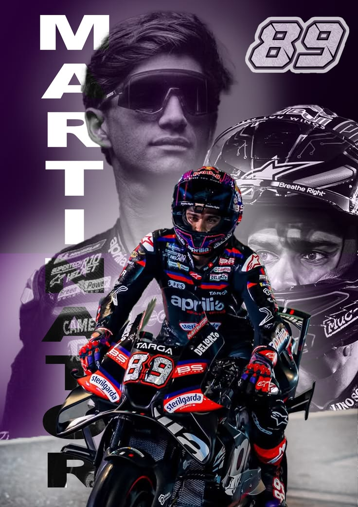

The Martinator | MotoGP Rider
Jorge Martín Almoguera หรือที่รู้จักกันในฉายา "The Martinator" นักแข่งรถจักรยานยนต์ทางเรียบระดับโลกชาวสเปน ผู้มีสไตล์การขับขี่ที่ดุดันและรวดเร็ว โดยเฉพาะความโดดเด่นในการคว้า Pole Position และ Sprint Race
